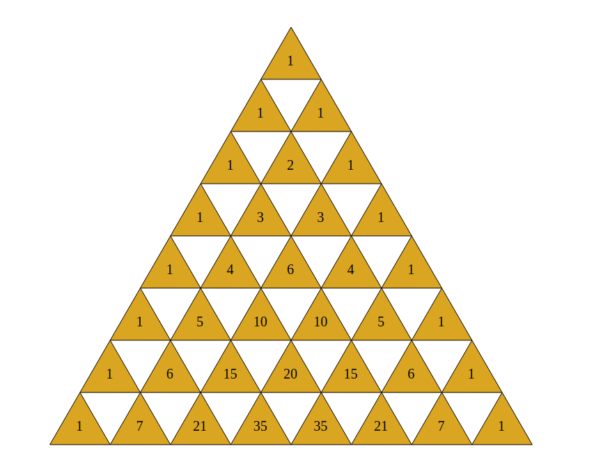

Triângulo de Pascal
O que é o Triângulo de Pascal?
O triângulo de Pascal é um padrão triangular de números que tem sua origem na matemática, especificamente na teoria dos números e na álgebra.
Cada número no triângulo é a soma dos dois números diretamente acima dele na linha anterior.
Os triângulos são frequentemente usados em diversas áreas da matemática, como aplicações combinatórias, binomiais e de probabilidade. Seu nome é uma homenagem ao matemático francês Blaise Pascal, que fez contribuições significativas para sua pesquisa.
Alguns Exemplos de Uso!!
Exemplo: Pode ser Usado para resolver na Área matematica para resolver uma Combinação
* Para aplicar está fórmula com o Triângulo de Pascal é preciso fazer ou olhar o Triângulo de Pascal.
O Índicie do Triângulo de Pascal começa do 0 para a Linha e Coluna.
Exemplo Prático!
Exemplo: Resolva a seguinte combinação: C(4,2).
Resposta: Usando os metódos aprendidos acima. Podemos concluir que a resposta é 6.
Encremento: Olhando no Triângulo de Pascal a Linha de Índicie 4 e a Coluna de indicie 2 é igual a 6.